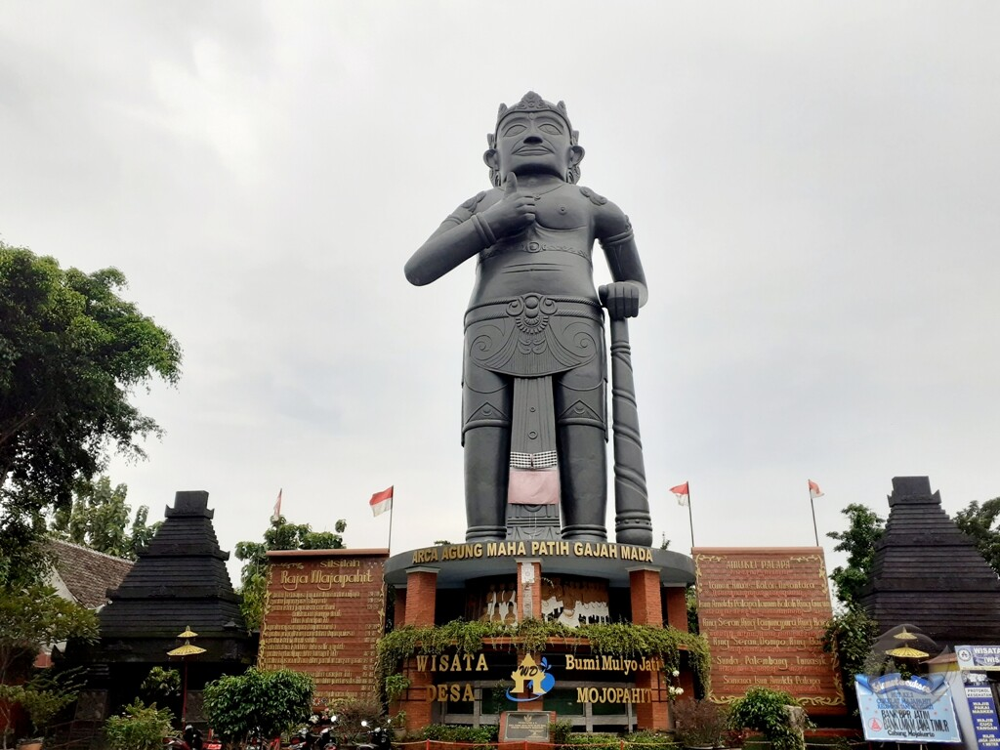

1. Masa Kerajaan Hindu-Buddha (Abad ke-4 - ke-15)
Sejarah Indonesia dimulai dengan munculnya kerajaan-kerajaan bercorak Hindu-Buddha.

- Kerajaan Kutai (Abad ke-4): Kerajaan Hindu tertua di Kalimantan Timur.
- Kerajaan Tarumanegara: Berpusat di Jawa Barat.
- Kerajaan Sriwijaya: Kerajaan maritim terbesar di Asia Tenggara.
- Kerajaan Majapahit: Mencapai puncak kejayaan di bawah Raja Hayam Wuruk.
Video: Sejarah Kerajaan Majapahit
Sorotan Khusus: Kerajaan Majapahit
Pendahuluan
Kerajaan Majapahit merupakan salah satu kerajaan terbesar dan paling berpengaruh dalam sejarah Indonesia. Kerajaan ini berdiri sekitar tahun 1293 Masehi di wilayah Trowulan, Mojokerto, Jawa Timur. Majapahit mencapai masa kejayaan pada masa pemerintahan Raja Hayam Wuruk dengan dukungan Mahapatih Gajah Mada yang terkenal dengan Sumpah Palapa.
Gambar Kerajaan Majapahit

.webp)
Sejarah Berdirinya
Kerajaan Majapahit didirikan oleh Raden Wijaya pada tahun 1293 setelah berhasil mengalahkan pasukan Mongol yang dikirim oleh Kaisar Kubilai Khan dari Dinasti Yuan. Nama "Majapahit" berasal dari buah maja yang rasanya pahit yang banyak ditemukan di wilayah tersebut.
Raja-Raja Majapahit
- Raden Wijaya (1293–1309)
- Jayanegara (1309–1328)
- Tribhuwana Tunggadewi (1328–1350)
- Hayam Wuruk (1350–1389)
- Wikramawardhana
- Suhita
- Kertawijaya
- Rajasawardhana
- Girisawardhana
- Bhre Kertabhumi
Mahapatih Gajah Mada

Gajah Mada merupakan Mahapatih Majapahit yang terkenal karena mengucapkan Sumpah Palapa. Dalam sumpah tersebut ia berjanji tidak akan menikmati kenikmatan hidup sebelum berhasil mempersatukan Nusantara.
Masa Kejayaan
Masa kejayaan Majapahit terjadi pada pemerintahan Raja Hayam Wuruk (1350–1389). Wilayah kekuasaan Majapahit meliputi sebagian besar Nusantara, termasuk Jawa, Bali, Sumatra, Kalimantan, Sulawesi, Nusa Tenggara, Maluku, bahkan memiliki hubungan dengan wilayah Asia Tenggara.
Peninggalan Kerajaan Majapahit
- Candi Tikus
- Candi Brahu
- Gapura Bajang Ratu
- Candi Wringin Lawang
- Kitab Negarakertagama
- Kitab Sutasoma
Penyebab Kemunduran
Setelah wafatnya Hayam Wuruk, Majapahit mulai mengalami kemunduran akibat perang saudara (Perang Paregreg), perebutan tahta, melemahnya ekonomi, dan berkembangnya kerajaan-kerajaan Islam di Nusantara. Sekitar awal abad ke-16, Kerajaan Majapahit akhirnya runtuh.
Fakta Menarik
- Majapahit dikenal sebagai kerajaan terbesar di Nusantara.
- Memiliki armada laut yang kuat.
- Kitab Negarakertagama menjadi sumber sejarah utama Majapahit.
- Semboyan "Bhinneka Tunggal Ika" berasal dari Kitab Sutasoma.
- Trowulan dipercaya sebagai bekas ibu kota Majapahit.
Video Dokumenter Majapahit
Kesimpulan
Kerajaan Majapahit merupakan salah satu kerajaan terbesar dalam sejarah Indonesia yang berhasil mempersatukan sebagian besar wilayah Nusantara. Kejayaan Majapahit menjadi inspirasi lahirnya semangat persatuan bangsa Indonesia hingga saat ini.
Disusun untuk Media Pembelajaran Sejarah Indonesia
.webp)
.webp)